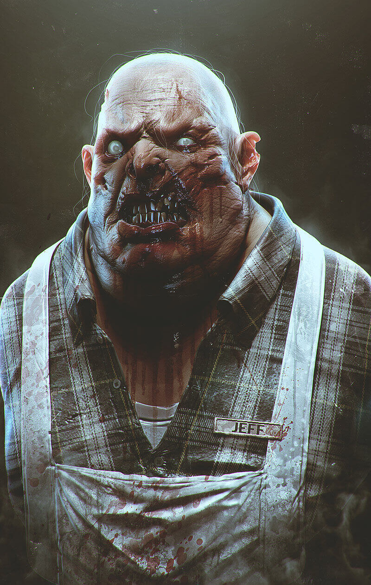
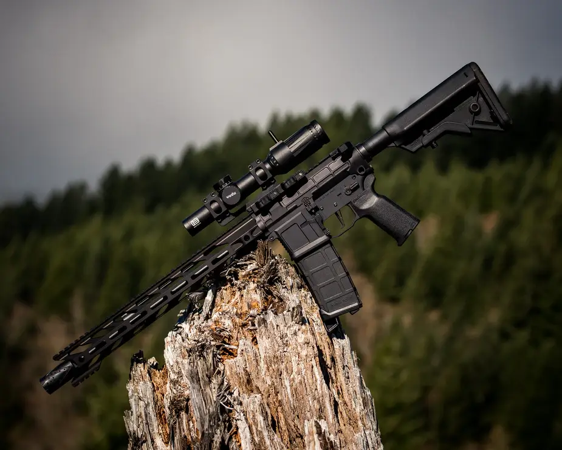
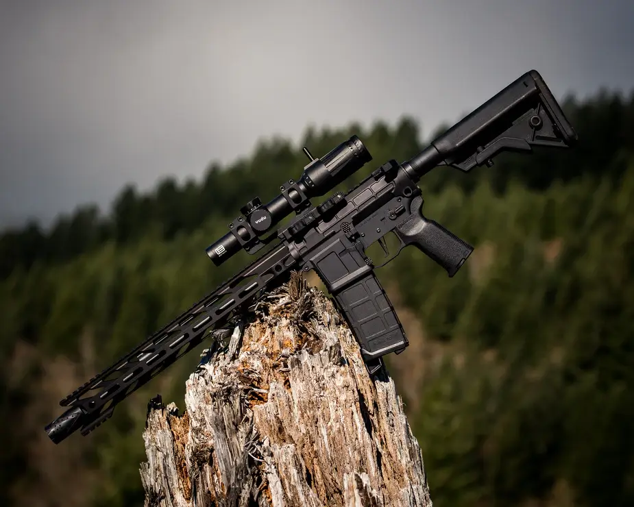
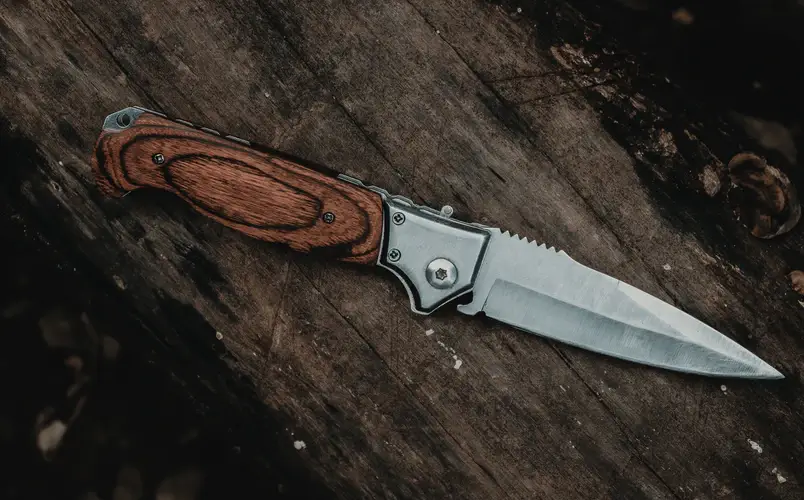
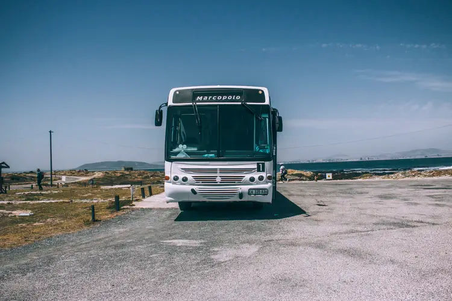
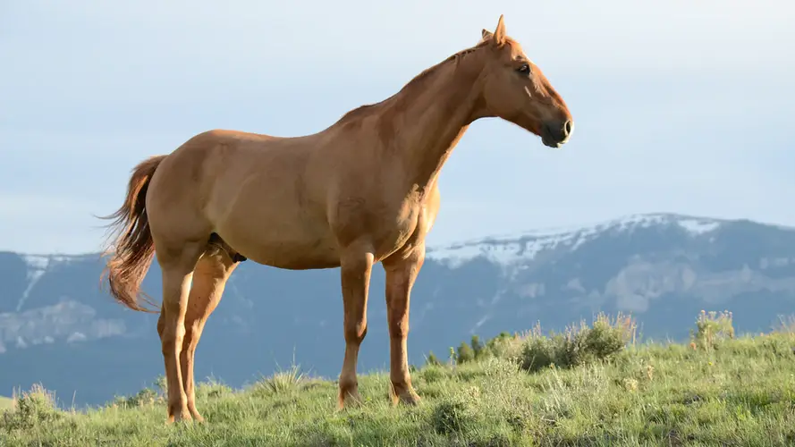

setting up camp
When setting up a camp, there are three things you must consider; location, resources and defence. We have found the most important things you will need to help set up your camp, scroll down to check them out.

The Infected
-
Shamblers - Homo sapiens mūtans:
Shamblers are the first type of mutation found in the final stage of infection. When found in a group, called a hive, these individuals are classed as the worker. They're often seen creating nests and gathering in hordes in search of food. If threatened, the Shamblers scream to warn other Infected nearby. Upon hearing the scream, all nearby Infected will rush to their hive-mate and attack every living thing.

-
Tanks - Homo sapiens mūtans corporosus:
The "Tank" variant displays increased muscle mass and hardened bones. They often attack poorly defended compounds and convoys with extreme violence. One Tank has been know to demolish a wooden palisade in under one minute and should be avoided at all costs. Thankfully this variant is not very common, only appearing in one in every one thousand cases. -
Hive-leader - Homo sapiens mūtans princeps:
This variant is a rare mutation, appearing as a leader within the group. They issue orders through the "hive" through a form of telepathy. They retain some higher brain function, allowing them to organise other Infected in attacks on compounds and convoys. These leaders appear very rarely, only one in one million cases. They attract other Infected to them to form hives and are very territorial against other leaders.
Must-Haves For Every Camp
As well as having the equipment you need, storage is key. If you want to survive anything that you may come into contact with, then you need to really consider your storage options. Keep weapons and ammo locked up and central, deep in your compound and away from potential fires. Food and water storage should be in dry areas, kept off the floor to discourage rats, and kept in secure areas throughout the camp. If one area is destroyed, damaged, or corrupted in some way, you will have other sources of food and water to fall back on. Check out our must-haves below to see what you'll need.
-
Food Stores:
- Dry Foods: Canned food is a great starter food for your survival bunker. Thankfully, it's easy enough to can your own fresh food if you have the right equipment. Get creative and don't forget to ration your stores. When you can, eat your fresh food before you eat your canned foods. And make sure to check out your local wholesaler for dry goods!
- Edible Plants: Your local libraries and garden centres are your best friends. If you can get a book on edible wild plants, you can find a lot of fresh plants in the wild. Garden centres will provide you with all the seeds and equipment you will need to grow fruit and vegetables. Enjoy them in season and make sure to save your seeds!
- Fresh Meat: You can get fresh meat one of two ways, by hunting wild game or by raising livestock. If you want to hunt, you will need snares, traps and a weapon such as a bow or a rifle. The ideal animal to raise during the apocalypse is a rabbit. The reason for this is two females and one male rabbit can produce as much meat as a cow within a year. And they are small enough to be carried in a cage for a quick getaway!


 

-
Weapons:
- Long Ranged: As mentioned earlier, you will likely need a weapon to hunt for fresh meat. A bow or a rifle will do the job, but which one is better? The rifle is a powerful weapon that could also be loud enough to bring attention. The sound of gunfire could alert enemies to your position. It also requires ammunition which will be in short supply in the apocalypse unless you can make more. A bow is not only quiet, but it's also lightweight. Also, the bow and arrows can be crafted from nature, making this a versatile weapon.
- Close Quarters: For close-quarters combat against humans or infected, a short, tactical rifle and pistol would be ideal. With this, you can clear a building or engage in enemies that are getting closer. The only problem, again, is the limited ammunition in the apocalypse. As an ammo free alternative, keep a strong hatchet, hurley stick, or the classic shillelagh to hand at all times. 
- Knife: In a pinch, you may find you have nothing left but a knife. A good quality knife can be one of the most important tools you have in your armoury. You may need to cut your way through tent material, cut a rope tying an exit shut, or fending off an enemy. A knife is only as effective as the person wielding it, so make sure you practice your knife skills regularly. It could be the difference between life and death.


-
Transportation:
- Golf Cart: It seems silly, but a golf cart would be an ideal form of transport when everything else has come to a stop. Golf carts are electric and, being small and light, require very little energy to actually power. They can go a very long way on one charge. Now, they may not be the fastest vehicle in the world (although they will be once fuel has dried up!) but they can travel for around 2 hours at a steady 15-20mph. That’s about a 40-mile range, which is enough for a patrol, a run to the nearest town, or a trade run to the next colony! If you have a decent electrical grid set up you’ll be able to charge the cart quickly, and even provide additional batteries for longer travel. If you’re particularly savvy with electricity, it’s even possible to set up a golf cart with an on-board solar panel to extend the battery life.
- Car: At the start of the apocalypse, a car might be your best option. But remember, fuel doesn't last forever. Petrol, when kept at 20 degrees, can last for up to six months. Higher temperatures reduce this time to three months. Diesel can last six months to a year, or until it becomes "sticky". Due to this, cars can become useless very quickly unless you can find an alternative fuel source. Watch this video to see how to make biofuel. 
- Bus: While the same fuel issue applies to buses, they can be an effective vehicle early on if you reinforce them. By barring up the windows and wrapping the bus in barbed wire, you can protect yourself from most attacks. This vehicle could even be a moving basecamp while you travel to your next destination. 
- Horse: Horses are a very reliable mode of transportation. Not only are they quick and agile, but they can also hear danger approaching before you can. You will want to raid a large animal veterinary clinic and a stable to get all the medicine, equipment, and horses you need. If you're lucky, you may even be able to find a cart for your horse to pull. Just remember that not all horses have learned how to pull a cart or carriage, so there may be some teething problems in the beginning. Lastly, always make sure you have at least one male and one female. Horses don't just multiply themselves you know!